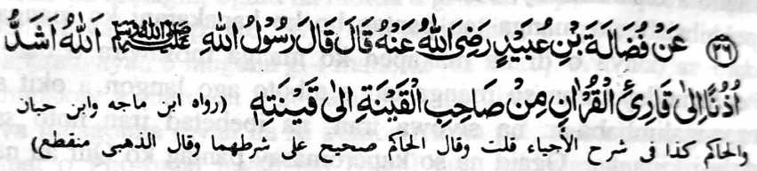
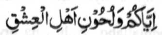
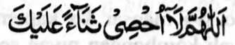

Hadith -26

Miyakathitayan ko Fudhalah ibn-e ‘Ubaid Radiallaho Anho a pitharo iyan a Rasulollah (Sallallaho Alaihi Wasallam), “So Allah na lebi a kapephamamakinega Niyan ko pembatiya sa Qur'an a di so kapephamamakinega o khirek ko pababayok ko bayok iyan. ”
Kalalayaman a so kambayok na pephakabirai. So peman so manga bara-agama a manga tao na di ran phamamakinegen so kambayok sabap ko manga bitikan o Islam. Ogaid, na so Islam na da niyan saparen so kapamama-kinega ko gi-i kambayok o oripen o tao a babay a kamimilikan niyan, apiya pen tanto niyan a magawi so pamamakinegan o tao.
Baden so Qur’an na di khapakay o ba aya kabatiya-aon na maka-ibarat sa ida-ida, sabap sa so kanggola-ola-a ro-o na inisapar ko kiya-aloya on ko inadakel a Hadith. Si-i ko isa a Hadith, na miya-aloy ron:

Pananggila-i niyo o ba niyo mabatiya so Qur'an sa lagid o manga-nganakan ko gi-i niyan kambayok.
So manga lokes tano na pitharo iran a so tao a batiya-an niyan so Qur’an sa lagid o kambayok na isa sekaniyan a Fasiq (Baradosa), na apiya so pepharnamakinegon na pekhadosa. Ogaid na mapiya so kabatiya-a ko Qur’an sa mapiya lago asar ka kena ba miyokit sa kambayok. Madakel a mbara-mbarang a Hadith a kadadaleman sa kipephangoyaten ko kabatiya sa Qur’an mokit sa mapiya lago. Miyaka-isa na pitharo o Rasulollah (Sallallaho ‘Alaihi Wasallam), ‘Pharasen niyo ko Qur’an so mapiya lago.” Si-i ko salakao a Hadith na miya-aloy ron: “So mapiya ago na pekhatakep iyan so kapiya-i bontal o Qur’an.”
So Hadhrat Shiekh Abdul Qadir Jilani (Rahmatullahi Alaihi) na isosorat iyan ko kitab iyan [ ] (Ghuniyah) a miyaka isa na so Abdullah ibn-e Mas’ud (Radhiallaho ‘Anho) na siyagadan niyan a satiman a darepa sa kilid a inged a Kufa na miyaka-ilay ron sa malilimod a manga baradosa ko satiman a walay. Aden a pababayok a so Zazan na gi-i magida-ida a rakhes o manga boni-boniyan niyan. So kiyanega niyan ko lago niyan, na so Ibn-e Mas’ud (Radhiallaho ‘Anho) na pitharo iyan, “Tanto a mapiya a lago o si-i maosar ko kapembatiya-a ko Qur’an.” Oriyan noto na siyali-kombongan niyan so olo niyan sa dinis na go bo okit. Miya-ilay o Zazan a aden a gi-i niyan tharo-on. So kini-iza-an niyan non ko manga tao, na kiyatokawan niyan a so Ibn-e Mas’ud (Radhiallaho ‘Anho) a isa sekaniyan a Sahabi o Rasulollah (Sallallaho ‘Alaihi Wasallam) a aya bes somiyagad a pitharo iyan noto. Tanto a miyalek so Zazan sa aden maga-an so tothol, na bininasa niyan so manga boni-boniyan niyan na miyaganad baden ko Ibn-e Mas’ud (Radhiallaho ‘Anho) sa aya kiya-oriyan non na mimbaloy sekaniyan a isa ko minitayao a 'Alim ko masa niyan.
Madakel a Hadith a inipangoyat iran so kabatiya sa Qur'an a nggolalan sa mapiya a lago ago sareta iyan a inisapar iyan a o ba baden maka-iring sa bayok ago ida-ida.
So Huzaifah (Radhiallaho ‘Anho) na piyanothol iyan a pitharo o Rasulollah (Sallallaho ‘Alaihi Wasallam), "Batiya-a niyo so Qur’an ko okit a kabaliya-aon o manga Arab, go di niyo mbatiya-a si-i ko kapelago o manganganakan o di na lagid o kapelago o manga Yahodi ago so manga Nasrani. Aden a phakasalono a manga tao a mbatiya-an niran so Qur’an sa lagid o kambayok ago so kandidiyagao, na giya ngkoto a kapembatiya iran na di kiran phaka-ompiya sa maito bo. Ba siran den khapitna rakhes o manga tao a masoso-at ko kapembatiya iran.
So Ta’us (Rahmatullahi ‘Alaihi) na pitharo iyan a aden a miniza ko Rasulollah (Sallallaho ‘Alaihi Wasallam), “Antawa-ai miyabatiya iyan so Qur’an sa mapiya lago?” Inisembag o Rasulollah (Sallallaho ‘Alaihi Wasallam), “Sekaniyan so maneg iyo na aya magedam iyo na madadalem sekaniyan ko kalek ko Allah.” (Ma-ana so lago niyan na aya den a kanega on na sekaniyan na tatabaden sa kalek ko Allah). Giya-i na sabap ko mitataralo a gagao o Allah, na kena ba Niyan phaliyogaten ko tao so di niyan khagaga. Aden a Hadith a pezogo so Allah sa isa a Mala-ikat. Igira aden a pembatiya sa Qur’an, a di niyan khaontol si-i ko titho a okit iyan, na giyangkoto a Mala-ikat na pephaka-ontolen niyan so kapembatiya iyan ko ona-an pen o da niyan non kinaiken ko langit.

Ya Allah! Di a ken khagaga meriray so podi a miyapatot Reka